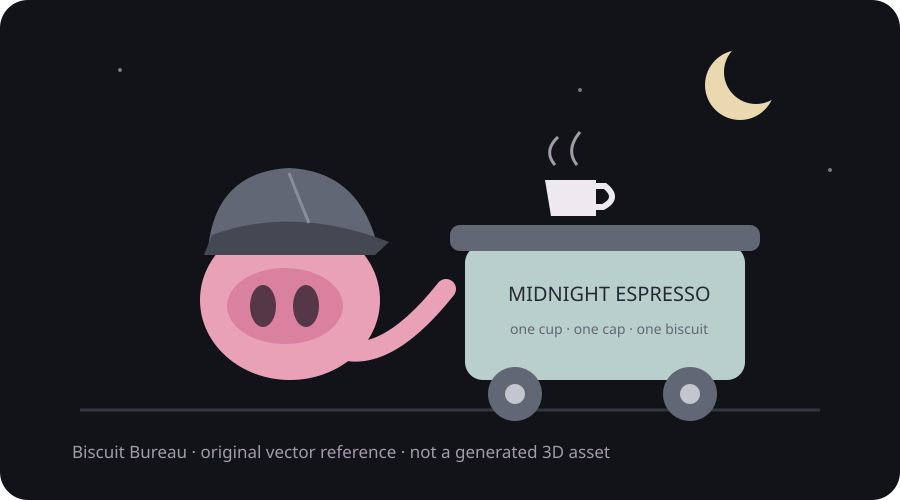

Shape language
Round forms, a broad cap brim and a compact cart. No angry spikes; this is a biscuit-friendly workplace.
Mr. Mik / Midnight Workshop / Design
Art direction / local reference desk
Illustrative demo · Offline · No real linked projects or live agent workA friendly night-time coffee courier, a very serious flat cap and a cart with wheels that squeak in a reassuring way. Keep the silhouette readable and the palette calm.
Round forms, a broad cap brim and a compact cart. No angry spikes; this is a biscuit-friendly workplace.

In a real workspace, Blender and Unity can be separate linked projects. A chat can discover the other folder path; accessing it still follows the native agent’s permissions. This demo links neither folder.